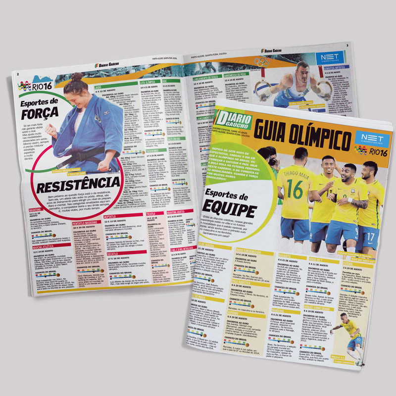
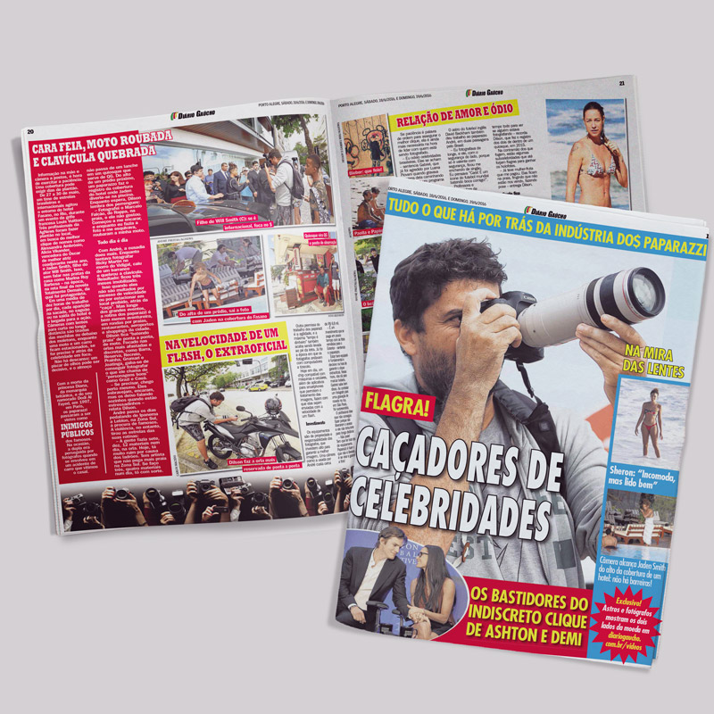
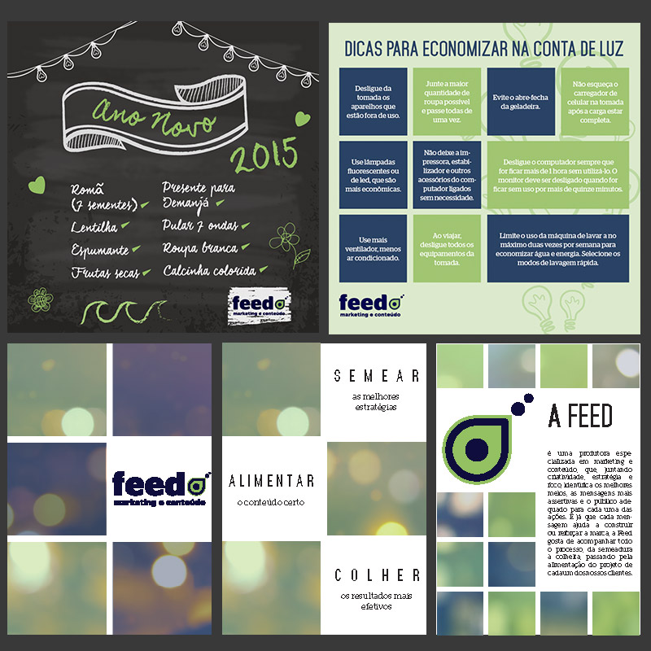
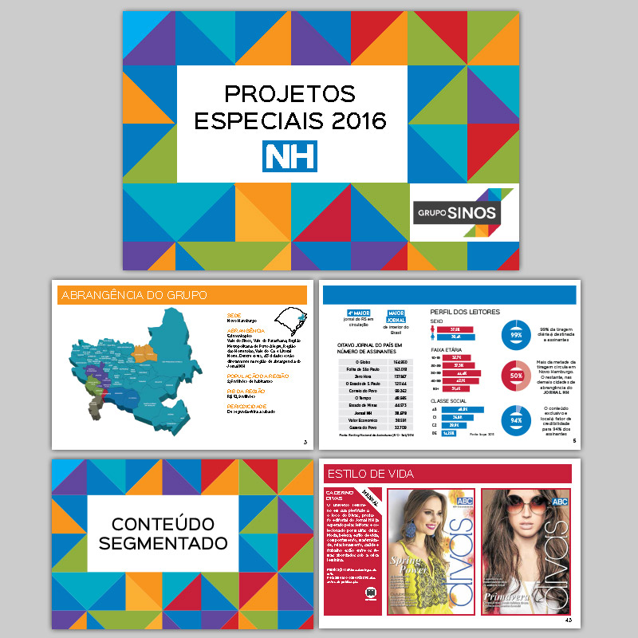

Design Editorial
Para enfrentar a violência (Diário Gaúcho)

Diagramação da série "Para enfrentar a violência", publicada pelo Diário Gaúcho, com exemplos positivos que ajudaram no combate à violência.
Olímpiadas (Diário Gaúcho)
Caderno especial sobre as Olimpíadas, divulgando as modalidades a serem disputadas e as chances de medalha da equipe brasileira.
Paparazzi (Diário Gaúcho)
Matéria especial produzida para o jornal Diário Gaúcho sobre o trabalho dos Paparazzi.
Diagramação de Revista (UseFashion)

Tratamento e recorte de imagens, diagramação e preparação para impressão da revista de moda Use Fashion.
Portfólio e cards (Feed)
Portfólio desenvolvido para apresentar os serviço oferecidos pela agência produtora de conteúdo Feed. Também foram produzidos cards com dicas para serem divulgados nas redes sociais.
Portfólio de produtos (Grupo Sinos)
Portfólio desenvolvido para o Grupo Sinos, com a divulgação dos diversos cadernos especiais e eventos oferecidos ao longo do ano.